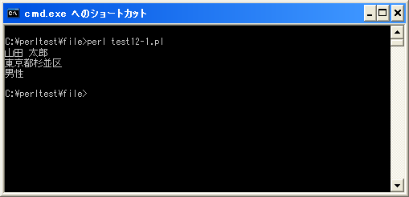

文字コードの指定
ファイルからテキストデータを読み込む場合には、ファイルの文字コードをPerlの内部的な文字コードに変換する必要があります。またファイルへテキストデータを書き出す場合はPerlの内部的な文字コードからファイルで使用する文字コードへ変換する必要があります。
入出力に関する文字コードを設定する方法としては、全ての入出力に対してまとめて指定する方法と、「open」関数を使用する時に個別に指定する方法があります。
open プラグマ
まずは全ての入力、全ての出力、又は全ての入出力に対してまとめて文字コード指定する方法を確認します。「open」プラグマを使います。
use open IN => ":utf8"; use open OUT => ":utf8"; use open IO => ":utf8";
use open IN => ":encoding(文字コード)"; use open OUT => ":encoding(文字コード)"; use open IO => ":encoding(文字コード)";
「use open IN」は入力の文字コードを、「use open OUT」は出力の文字コードを、「use open IO」は入出力の文字コードを指定します。
文字コードの指定方法は、UTF-8の場合は「:utf8」と記述し、UTF-8以外の場合は「:encoding(文字コード)」で記述します。例えば「encoding(euc-jp)」や「encoding(cp932)」のように記述します。
use open IN => ":utf8"; use open OUT => ":encoding(cp932)";
また入出力をまとめて指定する場合は次のように記述することも可能です。
use open IO ":utf8"; use open IO ":encoding(cp932)";
入力の対象となるファイルや、出力の対象となるファイルが同じ文字コードとなっている場合はこの記述方法を使用して下さい。
open関数の引数に指定する
個々のファイルとのやり取りの時に個別に文字コードを設定する方法です。「open」関数の3つの引数を指定する書式を使います。
open(ファイルハンドル名, "モード:文字コード", "ファイル名");
モードを指定する時に合わせて文字コードを指定します。文字コードの指定方法は「open」プラグマの時と同じくUTF-8の場合は「utf8」と記述し、それ以外の場合は「encoding(文字コード)」と記述します。
例えば次のように記述します。
open(DATAFILE, "<:utf8", "datain.txt"); open(DATAFILE, ">:encoding(cp932)", "dataout.txt");
この場合、「datain.txt」を読み込みで開く時に文字コードをUTF-8に設定し、「dataout.txt」を書き込みで開く時に文字コードを「cp932」に設定します。
サンプルプログラム
では簡単なプログラムで確認して見ます。
use strict;
use warnings;
use utf8;
binmode STDIN, ':encoding(cp932)';
binmode STDOUT, ':encoding(cp932)';
binmode STDERR, ':encoding(cp932)';
open(DATAFILE, "<:utf8", "data12-1.txt") or die("Error:$!");
while(my $line = <DATAFILE>){
chomp($line);
print "$line¥n";
}
close(DATAFILE);
open(DATAFILE, ">:encoding(cp932)", "data12-2.txt") or die("Error:$!");
print DATAFILE "加藤 花子¥n";
print DATAFILE "東京都新宿区¥n";
print DATAFILE "女性";
close(DATAFILE);
上記を「test12-1.pl」の名前で保存します。保存する時の文字コードは「UTF-8」として下さい。
今回はカレントディレクトリに「data12-1.txt」と言うファイルを用意します。ファイルの文字コードはUTF-8(BOM無し)に設定してあります。
コマンドプロンプトを起動し、プログラムを保存したディレクトリに移動してから次のように実行して下さい。

「UTF-8」で記述されたファイルの内容を読み込み画面に表示しています。
また「data12-2.txt」と言うファイル名を指定し書き込み用にファイルを開いています。「data12-2.txt」は存在していないファイルですので新規に作成されます。書き込み時の文字コードとして「cp932(Shift_JIS)」を指定していますので、作成された「data12-2.txt」ファイルの文字コードは「cp932」となっています。
( Written by Tatsuo Ikura )

著者 / TATSUO IKURA
初心者～中級者の方を対象としたプログラミング方法や開発環境の構築の解説を行うサイトの運営を行っています。